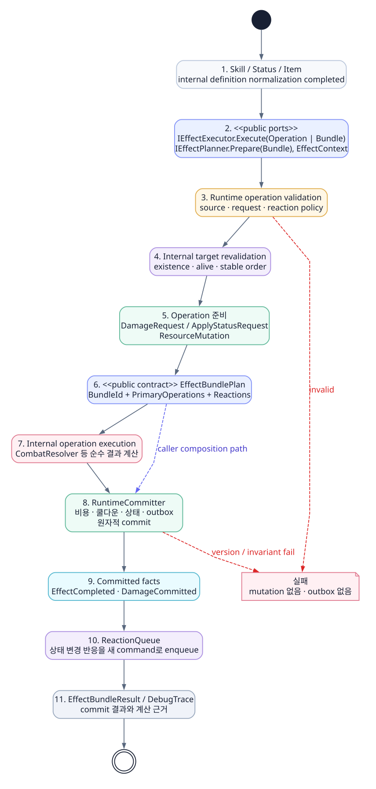
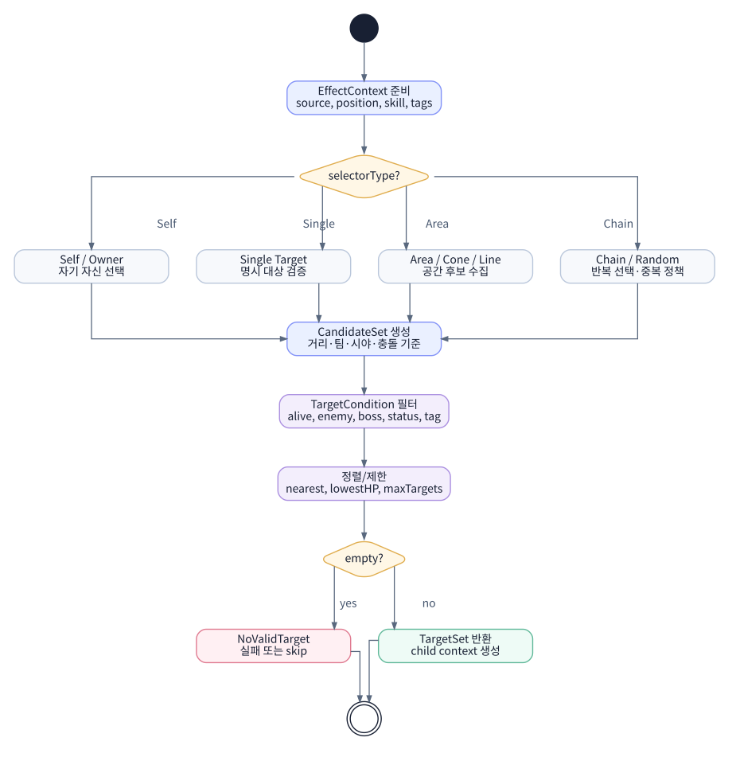
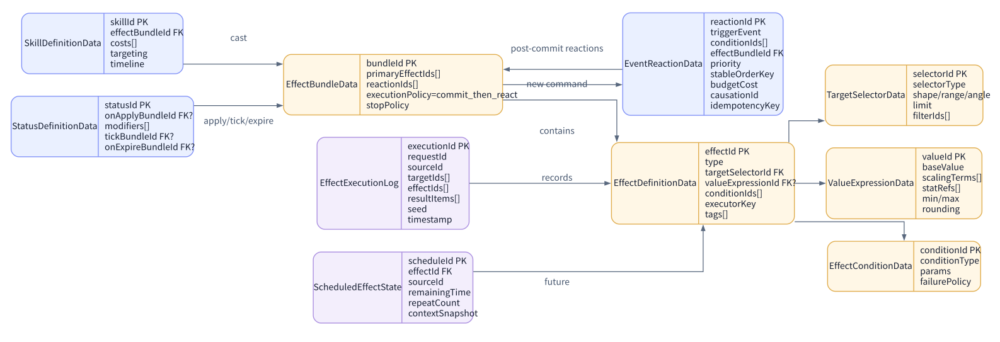
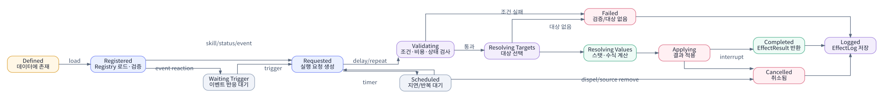

Effect System
Effect System은 스킬, 아이템, 상태, 보상이 실제 게임 결과를 요청하는 공통 실행 경계다. 현재 C# 참조는 EffectContext, operation·bundle 값과 planner/executor 포트 모양을 제공하고, 대상 선택·계획·commit 조율 구현은 개념 확장으로 설명한다. 피해·상태·자원 변경은 각 소유 시스템에 위임한다.
학습 목표
대상 선택과 결과 요청을 C# Effect 타입으로 표현하고, Stat·Combat·Status에 책임을 넘기는 경계를 구분한다.
선수 개념
Stat 조회와 SourceRef 추적, 불변 요청 객체가 필요한 이유를 먼저 이해한다.
Effect System의 책임 경계
Effect는 “무슨 결과를 적용할 것인가”를 담당한다. 하지만 키 입력, 애니메이션, 명중 공식, 장기 성장까지 모두 처리하면 안 된다.
| 담당한다 | 담당하지 않는다 |
|---|---|
| Effect 정의와 실행 | 플레이어 입력 처리 |
| 대상 선택 규칙 실행 | 공격 애니메이션 타이밍 전체 |
| 값 공식 계산과 Stat 조회 | 게임별 상세 피해 공식 전체 |
| EffectResult와 실행 trace 생성 | 장비 드랍 경제 |
| outbox event plan과 commit 이후 dispatch | AI 의사결정 |
왜 Effect가 중간 계층인가?
스킬, 아이템, 상태, 보상은 겉으로는 다르지만 결국 결과를 적용한다. Fireball은 피해와 화상을 적용하고, Healing Potion은 회복을 적용하며, Rage Buff는 Modifier를 적용한다. 이들을 각각 별도 코드로 만들면 시스템이 흩어진다.
핵심 객체 상세
EffectDefinition·TargetSelector·ValueExpression은 콘텐츠 로딩 계층을 위한 개념적 확장이다. 현재 C# 실행 참조는 EffectContext, EffectOperation/EffectBundle, 결과 타입과 planner/executor 포트까지만 선언한다.EffectDefinition
효과의 개념적 정적 데이터다. production 콘텐츠 정의에는 EffectId, Type, TargetSelector, ValueExpression, Conditions, Tags, Timing, OrderingPolicy 같은 필드를 둘 수 있지만 현재 C# 실행 참조에 이 타입은 없다.
EffectContext
실행 시점의 상황이다. 최소 계약은 CasterId, InitialTargetId, Source, RandomSeed를 담고, Effect 종류에 필요한 값은 별도 문맥 타입으로 확장한다.
TargetSelector
Effect가 적용될 대상을 찾는다. 단일 대상, 원형 범위, 전방 부채꼴, 체인, 자기 자신, 소환 위치 등을 처리한다.
ValueExpression
회복량, 자원 변화량처럼 Effect가 직접 소유하는 값을 계산한다. DamageEffect에서는 계수를 여기서 확정하지 않고 FormulaId, BaseValue, CoefficientBps를 DamageRequest에 담아 Combat에 넘긴다.
EffectOperation
Damage, Heal, ApplyStatus, AddModifier, ModifyResource, Dispel, Spawn 등 실제 적용 동작이다.
EffectResult
실행 결과의 공통 기반 타입이다. 실행 참조에서는 단일 operation의 EffectOperationResult와 묶음 commit의 EffectBundleResult로 구체화하며, 상세 계산 근거는 별도 trace에 남긴다.
C# 핵심 계약
개념적 EffectDefinition은 콘텐츠 작성·로딩 단계의 목표 정적 데이터다. production 로더와 대상 선택기는 이를 검증해 실행 가능한 실제 계약인 EffectOperation 또는 EffectBundle로 정규화한다. 공개 IEffectExecutor는 이 런타임 모델만 받으며, DamageEffect는 피해를 직접 계산하지 않고 DamageRequest를 Combat에 전달한다.
public sealed record EffectContext(
EntityId CasterId,
EntityId? InitialTargetId,
SourceRef Source,
uint RandomSeed);
public abstract record EffectOperation(EntityId OperationId);
public abstract record EffectResult(bool Succeeded);
public sealed record EffectOperationResult(
bool Succeeded,
EntityId OperationId) : EffectResult(Succeeded);
public sealed record EffectBundleResult : EffectResult
{
public EffectBundleResult(
bool committed,
EntityId bundleId,
int appliedEffectCount,
int queuedReactionCount) : base(committed)
{
if (appliedEffectCount < 0)
throw new ArgumentOutOfRangeException(nameof(appliedEffectCount));
if (queuedReactionCount < 0)
throw new ArgumentOutOfRangeException(nameof(queuedReactionCount));
if (!committed &&
(appliedEffectCount != 0 || queuedReactionCount != 0))
throw new ArgumentException(
"An uncommitted bundle cannot report applied work.");
Committed = committed;
BundleId = bundleId;
AppliedEffectCount = appliedEffectCount;
QueuedReactionCount = queuedReactionCount;
}
public bool Committed { get; }
public EntityId BundleId { get; }
public int AppliedEffectCount { get; }
public int QueuedReactionCount { get; }
}
public interface IEffectExecutor
{
EffectOperationResult Execute(
EffectOperation operation,
EffectContext context);
EffectBundleResult Execute(
EffectBundle bundle,
EffectContext context);
}
public interface IEffectPlanner
{
EffectBundlePlan Prepare(
EffectBundle bundle,
EffectContext context);
}EffectDefinition → EffectOperation 변환은 내부 정의 해석 단계다. 공개 IEffectExecutor는 독립 command를 끝까지 실행할 때 사용하고, Skill처럼 비용·쿨다운과 주 Effect를 같은 transaction으로 묶어야 하는 상위 조율자는 순수 IEffectPlanner.Prepare로 target-resolved EffectBundlePlan을 먼저 얻는다. 실행 참조에는 두 포트가 모두 있으므로 Execute(EffectDefinition, ...) 같은 혼합 API를 만들지 않는다.
개념적 Effect 실행 파이프라인
아래 순서는 production adapter가 구현할 목표 조율이다. 현재 C# 실행 참조는 EffectOperation·EffectBundle·EffectBundlePlan·결과 타입과 IEffectPlanner/IEffectExecutor 인터페이스, Fireball bundle 구성을 검증하지만 planner/executor/TargetSelector 구현은 포함하지 않는다.

- Effect 요청을 받는다.
- EffectDefinition을 로드한다.
- EffectContext를 만든다.
- 전역 조건과 실행 조건을 검증한다.
- TargetSelector로 대상 후보를 수집한다.
- 대상별 조건을 다시 검증한다.
-
일반 Effect는 ValueExpression을 계산한다. DamageEffect는 계산 입력을 DamageRequest로 정규화한다. 현재 실행 참조에서는 호출자가 Stat snapshot을
CombatContext.ScalingStatValue로 미리 해석하고 Combat은 단일 계수식을 계산하며, 전체 Stat 조회와 공식 registry는 개념 확장이다. - EffectOperation의 mutation과 outbox를 EffectPlan으로 준비한다.
- RuntimeCommitter가 plan의 상태 변경과 outbox를 한 transaction으로 commit한다.
- commit 성공 receipt로 EffectResult와 trace를 만들고, 외부 adapter가 committed fact를 dispatch한다.
Target Selection 설계

| Target 타입 | 의미 | 예시 |
|---|---|---|
| Self | 시전자 자신 | 회복, 보호막, 버프 |
| ExplicitTarget | 스킬이 지정한 대상 | 단일 타겟 주문 |
| AreaCircle | 지점 기준 원형 범위 | Fireball, 폭발 |
| ForwardArc | 시전자 전방 부채꼴 | 근접 베기 |
| Chain | 첫 대상에서 주변 대상으로 전이 | 연쇄 번개 |
| OwnerOrSource | 효과를 만든 원천 대상 | 소환체, 함정, 장판 |
TargetingSpec
은 사용자가 무엇을 조준할 수 있는지 검증하고, Effect의
TargetSelector
는 release/hit 시점에 실제 영향 대상을 다시 해석한다.
Effect 타입 카탈로그
아래 타입은 결과 적용의 기본 범주다. 각 타입이 소유할 계산과 다른 시스템에 위임할 요청을 구분하면 새로운 효과도 같은 실행 파이프라인에 연결할 수 있다.
| EffectOperation | 필요성 | Stat 연동 |
|---|---|---|
| DamageEffect | 전투 시스템의 핵심 | 공격자 스케일링, 속성 보너스, DamageType, Source tag |
| HealEffect | 회복, 흡혈, 재생 | 회복력, 회복량 증가/감소 |
| ModifyResourceEffect | 마나 회복, 스태미나 감소, 자원 흡수 | current/max resource |
| ApplyStatusEffect | 버프/디버프 부여 | Status 내부 Modifier |
| AddModifierEffect | 일회성/임시 스탯 보정 | 직접 StatModifier 등록 |
| DispelEffect | 상태 제거 | source/tag 기반 Modifier 제거 |
| SpawnEffect | 소환, 장판, 투사체 | 소환체의 StatBlock |
| MoveEffect | 넉백, 끌어당김, 이동 | 무게, 넉백 저항 |
ValueExpression과 DamageRequest 예시
Heal이나 ModifyResource처럼 Effect가 결과값을 소유하는 경우에는 ValueExpression을 계산한다. 피해는 같은 표현식을 Effect와 Combat에서 두 번 계산하지 않도록 DamageEffect가 아래 입력을 요청으로 만든다. 현재 실행 참조는 한 개의 CoefficientBps와 미리 해석된 ScalingStatValue만 지원한다. 여러 scaling 항과 Combat 내부 Stat 조회는 개념 확장이다.
{
"id": "effect.fireball-damage",
"type": "damage",
"damageType": "fire",
"target": { "type": "explicit_target" },
"damageRequest": {
"formulaId": "combat.fire.v3",
"baseValue": 24,
"coefficientBps": 12000
},
"combatContext": { "scalingStatValue": 120 },
"conditions": ["target_is_alive"],
"tags": ["spell", "fire", "single-target"]
}C# DamageRequest handoff
JSON 정의를 읽은 DamageEffect adapter는 실제 C# 요청 타입을 만들고, 계산은 ICombatResolver에 위임한다. DamageRequest 생성자는 빈 damageType, 음수 base/coefficient, null tags와 빈 tag를 거부하고 IEnumerable<string>을 읽기 전용 복사본으로 보존한다.
DamageRequest request = new(
attackerId,
defenderId,
SourceRef.SkillExecution(skillDefinitionId, commandId),
formulaId,
damageType: "fire",
baseValue: 24,
coefficientBps: 12_000,
tags: new[] { "spell", "fire", "single-target" },
seed: 61_710u);
// CombatContext는 상위 계층이 미리 해석한 snapshot 값이다.
DamageResult result = combatResolver.Resolve(request, combatContext);전체 생성자 불변식과 필드 타입은 실행 참조의 Combat.cs가 기준이며, Combat 페이지의 C# 요청·결과 계약에서 함께 설명한다.
EffectResult와 실행 trace
공개 결과 타입은 호출자가 분기할 최소 정보만 반환한다. 단일 operation은 성공 여부와 OperationId, 묶음은 commit 여부와 적용·reaction 개수를 제공한다. 대상별 계산값, 생성 이벤트, 실패 근거와 디버그 메시지는 EffectTrace와 각 소유 시스템 결과에 별도로 남겨 결과 계약이 비대해지지 않게 한다.
EffectBundleResult 생성자는 두 count의 음수를 거부하고, Committed == false이면 적용 effect와 queued reaction 수가 모두 0이도록 강제한다. 실패했는데 일부 적용을 보고하는 모순된 carrier를 만들 수 없다.
EffectTrace effect.fireball-damage
- sourceRef: { kind: skill-execution, definitionId: skill.fireball, instanceId: command.fireball.cast.0001 }
- caster: entity.caster
- targets:
- entity.target: committed, outcome=Hit, rawDamage=252, resolvedDamage=202, shieldAbsorbed=40, finalHpDamage=162, overkill=0
- events:
- DamageCommitted
- EffectCompleted
- debug:
- base 24 + spell_power 120 × 1.2 = 168
- critical 168 × 1.5 = 252
- resistance 20% → 202, shield 40 → hp 162실패 처리와 트랜잭션
실패 처리는 하나의 열거형으로 고를 문제가 아니다. 대상별 실행, 주 transaction 범위, commit 이후 reaction, 외부 부작용 보상은 서로 다른 축이며 필요한 정책을 조합한다.
| 정책 축 | 선택지 | 의미와 사용 예 |
|---|---|---|
| 대상·operation 실행 | BestEffortPerTarget | 대상별 독립 command를 만들어 가능한 대상만 적용한다. 광역 버프·디버프처럼 한 대상의 실패가 다른 대상의 성공을 지우면 안 될 때 사용한다. |
| 대상·operation 실행 | AllOrNothing | 주 plan의 operation 하나라도 사전 검증이나 precondition에 실패하면 아무것도 commit하지 않는다. |
| transaction 경계 | SameCommit / SeparateCommand | 비용·쿨다운·주 피해처럼 함께 확정할 변경은 한 plan에 넣고, 독립적으로 실패할 수 있는 후속 상태 적용은 별도 command로 분리한다. |
| commit 이후 reaction | CommitThenReact | 주 transaction의 committed fact만 ReactionQueue command로 변환한다. 면역 정책을 추가한 확장에서는 Burn 면역 실패가 이미 확정된 피해를 되돌리지 않는다. |
| 외부 부작용 보상 | CompensatingAction | 이미 외부로 전달된 작업은 과거 상태를 rollback한다고 가장하지 않고 결제 취소·지급 회수 같은 명시적 보상 command를 실행한다. |
실행 계획과 Commit 경계
월드 이동, 투사체 생성, 이벤트 발행처럼 되돌리기 어려운 작업에 일반적인 rollback을 약속하면 구현이 불안정해진다. Effect는 먼저 검증하고
EffectPlan
을 만든 뒤, 가역적인 상태 변경과 outbox event를 한 번에 commit한다. 외부 adapter는 commit된 outbox만 dispatch하며 idempotency key로 중복 적용을 막는다.
C# 계약을 사용하는 개념 조율
정의 로더가 대상과 조건을 해석해 operation을 만든 뒤 executor port에 전달하는 목표 형태다. executor 내부의 검증과 계획 생성은 상태를 바꾸지 않고, RuntimeCommitter가 mutation과 outbox를 같은 transaction으로 확정한다. 아래 코드는 실행 참조의 실제 공개 타입과 인터페이스를 사용하는 통합 의사 코드이며, _effectExecutor 구현과 RuntimeCommitter 연결은 저장소에 포함되지 않는다.
// Conceptual product adapter; no executor implementation ships in this repository.
EffectOperation damage = new DamageEffectOperation(
operationId,
damageRequest);
EffectBundle bundle = new(
bundleId,
new[] { damage },
new[] { burnReaction },
EffectExecutionPolicy.CommitThenReact);
EffectBundleResult result = _effectExecutor.Execute(bundle, context);
if (!result.Committed)
return; // 주 transaction 실패: reaction을 시작하지 않는다.
// Product executor는 committed fact에서 만든 reaction만 queue에 넣는다.결정론과 랜덤 시드
EffectContext의 RandomSeed는 확률 분기를 재현하기 위한 입력 중 하나다. 같은 결과를 보장하려면 Core replay envelope처럼 입력 스냅샷, Definition·Formula·Numeric 버전, 대상 정렬, ClockDomain, 반올림 정책과 이벤트 순서도 함께 고정해야 한다. Seed만 같아서는 충분하지 않다.
데이터 모델

정의 데이터는 콘텐츠로 저장하고, 런타임의 EffectResult·outbox·trace는 재현 정보로 연결한다. EffectResult 자체를 세이브 데이터처럼 영구 저장할 필요는 보통 없지만, command와 SourceRef로 trace를 다시 찾을 수 있어야 디버깅과 리플레이가 가능하다.
생명주기

구현 안티패턴
- 스킬 코드 안에서 직접 HP를 깎고 상태를 부여하는 구조
- TargetSelector 없이 스킬마다 대상 검색을 따로 구현하는 구조
- EffectResult, 소유 시스템 결과, 실행 trace를 한 거대한 DTO에 섞거나 서로 연결하지 않는 구조
- CombatResolver와 EffectOperation을 한 클래스에 섞어 게임별 공식을 교체할 수 없는 구조
- 랜덤 시드 없이 테스트 재현이 불가능한 구조
Combat / Status 연결
Effect System은 DamageEffect와 ApplyStatusEffect의 다음 책임자를 명확히 가진다. DamageEffect는 최종 피해 공식을 직접 계산하지 않고
DamageRequest
를 만들어 CombatResolver에 전달한다. ApplyStatusEffect는 지속시간과 tick을 직접 관리하지 않고
ApplyStatusRequest
를 만들어 StatusSystem에 전달한다.
DamageEffect → CombatResolver
명중, 치명타, 방어, 저항, 보호막 계산은 Combat Resolution System에서 DamageResult로 정리한다.
StatusApplyStatusEffect → StatusSystem
버프, 디버프, DoT, CC의 지속시간, 중첩, tick, 해제 정책은 Status System이 관리한다.
| Effect 타입 | Effect의 책임 | 위임 대상 |
|---|---|---|
| DamageEffect | 대상과 SourceRef, DamageType, FormulaId, BaseValue, CoefficientBps를 담은 DamageRequest 생성 | CombatResolver |
| ApplyStatusEffect | StatusId, TargetId, SourceRef, StackDelta를 담은 ApplyStatusRequest 생성 | StatusSystem |
| ModifyStatEffect | 명시적 일회성 수치 변경 또는 Modifier 등록 요청 생성 | StatSystem 또는 ResourceController |
| SpawnEffect / MoveEffect | 게임 월드에 대한 명시적 요청 생성 | World/Entity System |
C# ApplyStatusRequest handoff
public sealed class ApplyStatusRequest
{
public EntityId StatusId { get; }
public EntityId TargetId { get; }
public SourceRef Source { get; }
public int StackDelta { get; }
}triggerFact는 어떤 committed fact가 상태 적용을 시작하는지 정하고, outcomePredicate는 Hit 같은 결과 조건을 표현한다. durationScale과 상태 tag도 정의 및 Status 적용 정책에서 해석한다. 이미 해석된 operation이 Status에 전달하는 ApplyStatusRequest에는 위 네 필드만 넣어 요청과 정책 메타데이터를 섞지 않는다.
이해도 확인
Effect가 결과를 직접 소유하는 부분과 Combat·Status에 요청으로 넘겨야 하는 부분을 구분해 본다.
- 01 · 책임 경계
DamageEffect가 주문력 계수, 치명타, 저항과 보호막까지 계산해 최종 피해를 만들어도 될까?
정답과 해설안 된다. Effect는 FormulaId, BaseValue, CoefficientBps, 대상과 SourceRef를 DamageRequest에 담고 최종 피해 계산은 Combat에 위임한다.
- 02 · 경계 상황
개념 확장에 Burn 면역을 추가한 뒤 후속 판정이 실패하면 어떤 결과가 남아야 할까?
정답과 해설주 transaction에서 이미 commit된 피해와 EffectBundleResult는 유지하고, 면역 실패는 별도 StatusResult와 trace에 남긴다. 현재 실행 fixture에는 면역 입력과 판정이 없다.
- 03 · 시스템 연결
입력 시점에 유효했던 대상이 release 시점에 이동했다면 Skill과 Effect는 각각 어디까지 다시 판단해야 할까?
정답과 해설Skill의 TargetingSpec은 사용자가 조준할 수 있는 입력을 검증한다. Effect의 TargetSelector는 release 또는 hit 시점의 실제 영향 대상을 다시 해석해 Combat이나 Status 요청으로 넘긴다.
설계 점검
- EffectDefinition과 EffectRuntime 실행 상태가 분리되어 있다.
- EffectContext가 CasterId, InitialTargetId, Source, RandomSeed를 포함한다.
- TargetSelector가 공통 모듈로 분리되어 있다.
- EffectOperation은 Damage, Heal, Resource, Status, Modifier부터 시작한다.
- EffectOperationResult와 EffectBundleResult는 호출 분기에 필요한 최소 결과를 담고, 상세 실패·계산 근거는 SourceRef로 trace와 연결한다.
- EffectService는 EffectCompleted를 outbox plan에 준비하고, commit 성공 뒤 외부 adapter가 이를 dispatch한다. 상태를 바꾸는 후속 효과는 ReactionQueue 명령으로 변환하며 UI를 직접 호출하지 않는다.